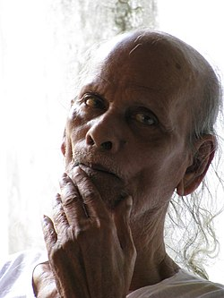
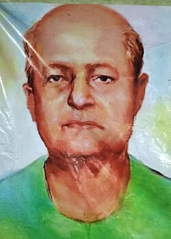
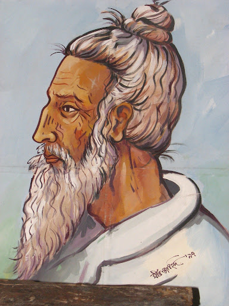

Mystical folk songs focused on spirituality, humanity, and inner peace.
River songs sung by boatmen expressing emotion, longing, and nature.
Emotional narrative songs inspired by historical and religious stories.
Philosophical folk music inspired by the teachings of Lalon Shah.

Genre: Baul
Region: Sylhet
Widely regarded as one of the greatest Baul musicians, he was called Baul Samrat (The Baul King).

Genre: Bhatiali
Region: Netrokona
Famous for his emotional river songs inspired by the beauty of Bangladesh waterways.
Genre: Jari
Region: Dhaka
A powerful performer of traditional Jari songs and cultural storytelling.

Genre: Lalon
Region: Jhenaidah
A Bengali spiritual leader, philosopher, mystic poet and social reformer who deeply influenced Rabindranath Tagore and Kazi Nazrul Islam.
Kushtia, Bangladesh
Barisal, Bangladesh
Jhenaidah, Bangladesh